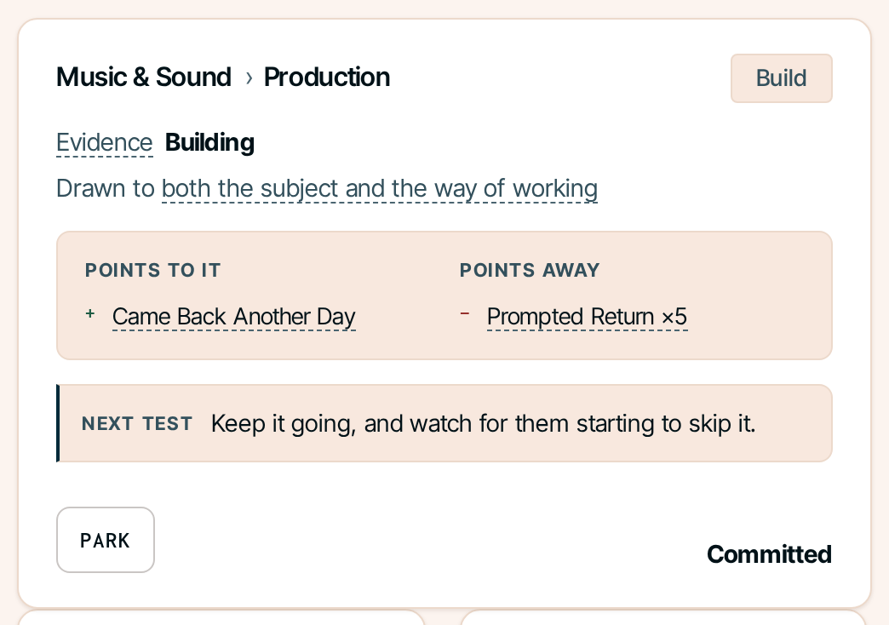
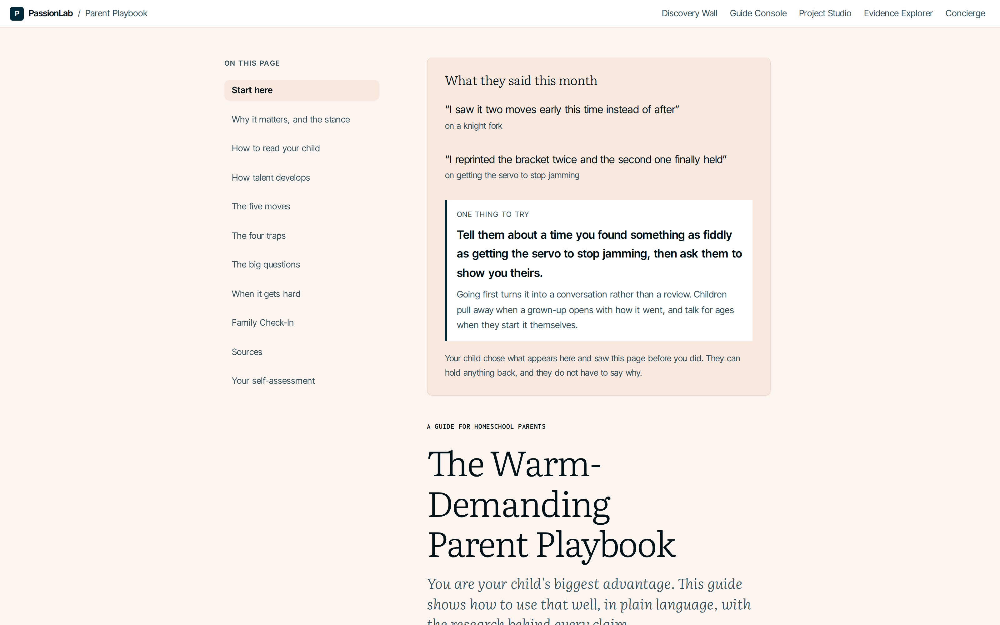
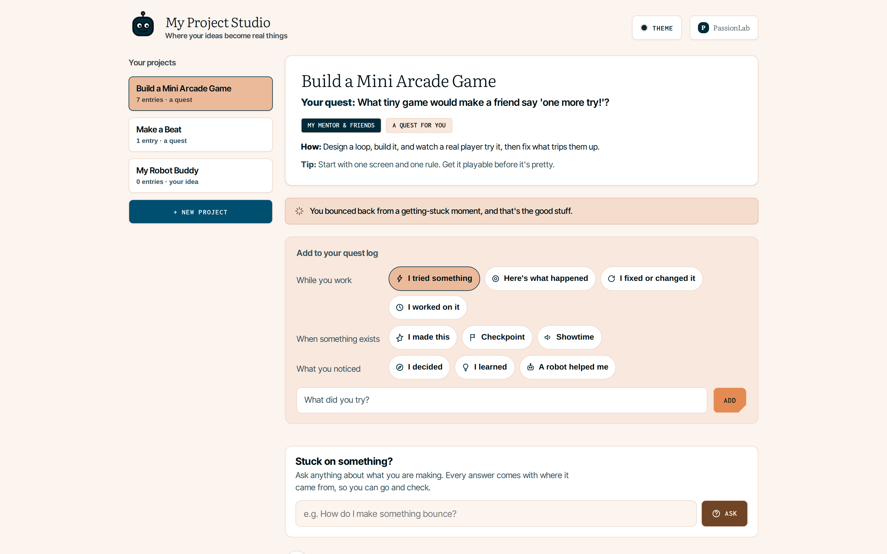
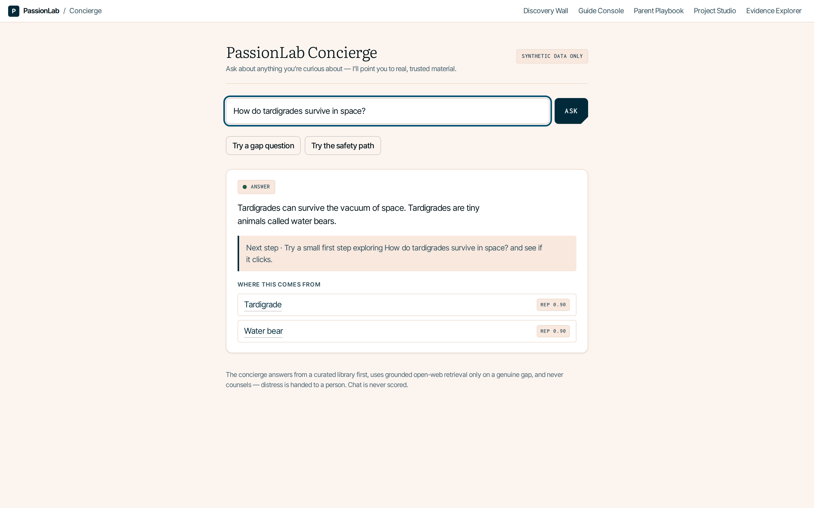

PassionLab × EvidenceGraph
What a child becomes after the morning, and how you prove it.
All data synthetic. No real child has used this.
The morning is the solved part.
Mastery-based academics handle the floor. Above it, scores are table stakes.
Built for one child in particular.
Not the kid already building rockets in the garage. That child found their thing and the agency to chase it.
Ours has real latent interest and no way in on their own. High potential, low agency.
Find the spike. Build it. Prove it.
What the child actually walks through.
One step is deliberately not automatic. A pursuit becomes a project only when a person says so.
Forty-four things a person can get good at.
One screen. No categories to walk through, no next page, nothing behind a menu.


Every pursuit has a judge.
Something to do now. Somewhere to read. Someone who says you are good at it.
ABRSM grades this child, not us. All 44 have a real external judge: a federation, a competition, a licensing body.
A pursuit with nobody to judge it is just a topic.
Most of what you could measure is noise.
| first click | Scores zero. Novelty is cheap. |
| time on task | Scores zero. Absorbed and stuck look identical. |
| same-day reopen | Scores zero. It has not survived a night away. |
| prompted return | Scores zero. We nudged them there. |
| how good the work is | Scores zero for interest. That is a different question. |
| return, later day | Scores 1.0. Nobody asked them to come back. |
Dwell time is still recorded and shown to a guide. It just never moves the number.
How the number is actually made.
Each subject and way-of-working pair carries evidence for and evidence against. Nothing else.
| Event | Weight |
|---|---|
| Came back on a later day, unprompted | +1.0 |
| Redid it unasked · chose harder · recovered from failing · set own scope | +0.5 |
| An adult saw them into the topic itself | +0.25 |
| Passed it over, having tried it before | −0.5 |
| Passed it over, never having tried it | −0.15 |
every event halves in weight after 14 days
skips divide by how many options were on screen
These are priors, not fitted parameters. The first real cohort recalibrates them.
What it takes before we call it a spike.
the same six, plus ten skips → score 0.53 · not a candidate
You can bank at most one return per day. Six units means roughly a week of coming back.
Two children need you first.
The roster leads with attention, not with names or numbers.
Bex Ito · Needs youFamily pressure flagged. Review before promoting.
The tag reads Synthetic, plus 1 ingested. It says out loud which data is real, because a reassurance that has quietly stopped being true is worse than none.

Two knobs, and pressure always moves first.
Difficulty and pressure are separate controls. Backing off never means easier work.


Three checks, then a person.
All three pass and the button still does nothing until a named adult clicks it and confirms the child wants it.
Unresolved family pressure holds promotion for that child until a guide reviews it. Parking is always available and always reversible.
Nothing demotes on silence.

What the parent never gets.
- Any number they can watch move
- Hours, sessions, streaks
- Comparison to other children
- Trend lines
- Push notifications
- Predictive or potential scores
- "Not opened in N days"
- Session-by-session history
They get the child's own words, once a month, and one thing to try.
A visible return metric would destroy the only unprompted signal we have.
What this looks like for one nine-year-old.
Week 4 matters as much as week 9. A system that only counts enthusiasm would have called this at week 2 and been wrong.
Singular work is only worth what you can prove about it.
So every project is paired with EvidenceGraph, the proof layer we built alongside it.
A finished artifact cannot tell you who made it.
An essay, a painting, a repo. The result is silent on whether it was the child, an AI, a parent, a tutor, or paid help.
Version history is not the answer either. Timestamps are typed in and can be rewritten. That is a claim, not evidence.
Record the making, not the result.
Every step content-addressed, so its fingerprint is its content. Change a byte and the id changes.

Then try to break it.
The whole graph rolls up to one root a verifier recomputes independently.
A button in the product tampers with a saved step. The check fails, the root mismatches, and the graph visibly fractures. Undo restores it.
Change one saved item and the check fails. That is how you know nothing has been edited since.

What we have not built.
Immutability is not a legal defence for refusing to delete, and we have not solved that yet. Today the graph lives in our own database and erasing a project deletes its rows outright. The hard problem arrives when we anchor to a log we do not control.
Singular, and provable.
PassionLab produces the singular work. EvidenceGraph wraps every project in its provenance, and works anywhere someone has to trust work they did not watch being made.
A spike no one can verify is just a claim. A provenance system with nothing worth proving is just plumbing.
The rest of the product.


Project studio logs the making as the child works. The concierge answers with sources or refuses, and escalates to a human when something matters.
Why not just track time?
Dwell is non-monotonic in interest. Stronger performers stay as progress rises, weaker ones stay with the most familiar option. Same number, opposite meaning.
Multiply weight by minutes and a 40-minute session outweighs 40 returns, so duration becomes the dominant term in the model.
Click-based idle detection separates active from idle. It does not separate absorbed from struggling, which is the part that breaks the inference.
Architecture.
A pure engine holds content-addressing, Merkle roots and human-authority validation, behind storage ports, with a read-only viewer that never recomputes trust.
Any human judgment requires a named human actor. A model actor may only appear on declared assistance or review.
The research base.
Fourteen sources survive in the bank. Each one changed something we built, and each carries a line naming the mechanism it produced.
Sources with no trace in the product were cut, including the study that opened the original document.
TimeBack integration.
Morning mastery data seeds afternoon priors, and only priors. It never gates what a child may explore.